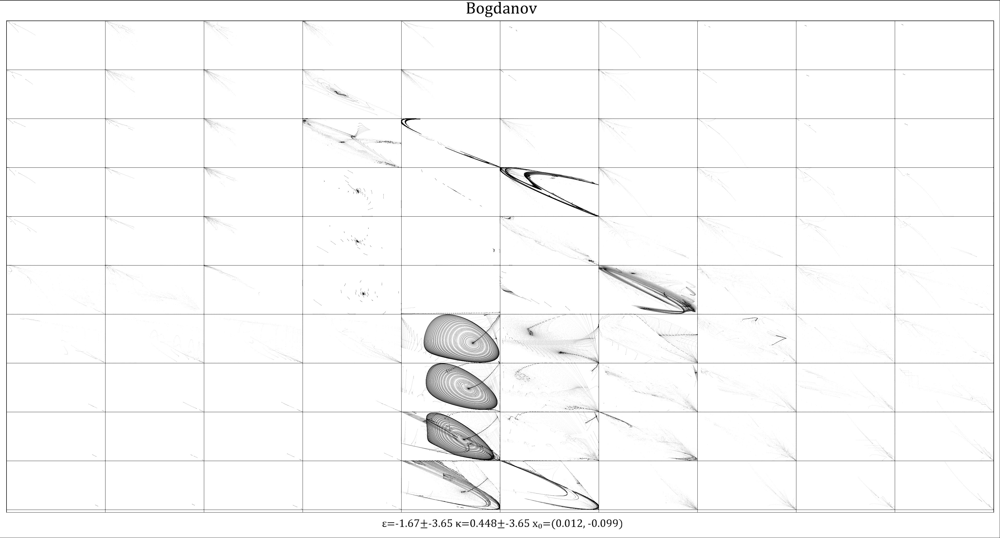

Bogdanov Map
The Bogdanov map is a 2-dimensional system described by the following equation:
Equation in progress
Bogdanov phase portrait

Survey of the Bogdanov attractor
Animated phase portrait
Lagrangian Descriptor for the Bogdanov attractor
Animated Lagrangian Descriptor
Related Information
Bifurcations and Attractors in Bogdanov Map
The Dynamical Properties of Modified of Bogdanov Map

 Bogdanov phase portrait
Bogdanov phase portrait Animated phase portrait
Animated phase portrait Lagrangian Descriptor for the Bogdanov attractor
Lagrangian Descriptor for the Bogdanov attractor Animated Lagrangian Descriptor
Animated Lagrangian Descriptor